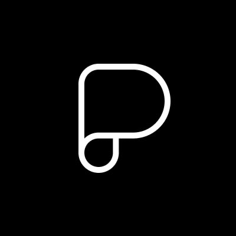

Paco Coursey：只想做网站的人
他在个人网站上写：「All I want to do is build websites.」排版、动效、文案、性能，在他看来网页是一个永远挖不完的媒介。他在 Vercel 开发过设计系统、官网和控制台，现在是 Linear 的「Webmaster」，负责 Linear 的官网和营销页面，也做 Linear 产品里的视频、音频播放器和 HTML 邮件。他写的 ⌘K（cmdk）是 React 世界里最常用的命令面板组件，next-themes 两行代码就能给 Next.js 加上不闪烁的深色模式。2025 年他把 cmdk 移交给 Dip，一个「为界面卓越而做工具」的小团队，他也是其成员。
- Design Engineering
- React
- Web 排版
- CSS
- Linear
一句话：个人网站「Crafting interfaces. Building polished software and web experiences. Experimenting with magical details in user interfaces.」
代表作：⌘K cmdk（★13,038，现归 Dip）、next-themes（★6,342）、Writer 纯文本编辑器（★582）、XSLT 构建系统实验、Linear 官网与「Conversations on Quality」系列页面。
关键数字：GitHub 近一年贡献 1,482 次；X 关注者约 4.2 万。
团队：Dip（dip.org）成员，同组还有 Benji Taylor、Dennis Jin、Alex Vanderzon。
2025 年 6 月，Paco 发布了一个叫 XSLT 的仓库。README 用「原始人」口吻写成：我做过很多网站，发现构建系统太复杂，「要好几个博士学位才能搞懂我的 Markdown 博客是怎么跑起来的」。他的答案是 1999 年的 W3C 标准 XSLT：浏览器原生支持，零配置，就能给静态网站套上统一的页头和页脚。他是一个在 Vercel 写过大量 Next.js 的人，所以这是一次很有意思的回归。
档案速览
Profile
- 身份
- 设计工程师
- 经历
- Vercel：设计系统、官网、控制台 → Linear：Webmaster（官网与营销页面）
- 团队
- Dip（dip.org），cmdk 的新家
- 开源
- cmdk、next-themes、Writer、use-delayed-render、Dusk 图标
- 技术栈
- React、TypeScript、CSS、Next.js、Web Animations API
他到底在做什么？
Paco 把网页当成一种工艺。他在 Linear 做官网时会为一个细节写一篇推：用 plus-lighter 让文字和动态背景混合，自己写一个可组合的视频播放器；Linear 产品里的视频和音频播放器也用了同一套组件，控件参考了 Apple 的「标准材质」。
他的「Craft」页面收集了这些实验：用 WAAPI 和 clip-path 复刻 Stripe 的标签切换，用 SVG 滤镜做更好的模糊，用纯 CSS 实现 Linear 的路线图时间线，复刻 iOS 的嵌套下拉菜单。
成长与经历
- 2018
第一批开源
极简笔记应用 Opus、自定义 macOS 图标集 Dusk。
- 2019–2020
博客与 Next.js 工具
写 CSS、SWR、主题切换等短文；开源 next-unused 和 next-themes。
- Vercel 时期
设计系统与官网
开发 Vercel 的设计系统、官网和控制台。
- 2021–2022
Writer 与 cmdk
2021 年写纯文本编辑器 Writer，2022 年发布 cmdk。
- Linear 时期
Webmaster
负责 Linear 官网，做「Conversations on Quality」系列页面、HTML 邮件和产品内播放器。
- 2025
XSLT 与 Dip
6 月发布 XSLT 构建系统实验；10 月 cmdk 移交 Dip。
代表作品详解
⌘K（cmdk） ↗
一个可以当无障碍组合框使用的命令菜单组件：你渲染条目，它自动过滤和排序。API 完全可组合，条目可以包在别的组件里，甚至写成静态 JSX；本身没有样式，交给使用者决定外观。
- GitHub
- ★13,038
next-themes ↗
「Perfect Next.js dark mode in 2 lines of code.」支持跟随系统、多主题，SSR 和 SSG 首屏都不闪烁，跨标签页同步，切换时可以临时禁用过渡。
Writer ↗
从零写的网页编辑器：缓冲区是行的数组，用 canvas 测量和折行，滚动时虚拟化，光标和选区都是 div。README 里的「未来」一栏列着 B 树缓冲、操作变换和 FreeType 渲染，看得出他对编辑器底层的兴趣。
| 其他作品 | 说明 |
|---|---|
| XSLT | 用 1999 年的 XSLT 做零配置静态网站构建（★327） |
| next-unused | 找出 Next.js 项目里没用到的文件（已归档，推荐改用 Knip） |
| Craft 合集 | Stripe 标签、iOS 菜单、模糊、时间线等界面复刻 |
| Dusk | 简洁的 macOS 应用图标集 |
个人网站研究
首页像一份简洁的名片：一句定位、三个项目、两篇文章、一段「Now」。Now 里写着他想做的事，也写着他听的音乐：「深沉、黑暗、无聊的舞曲」，以及鼓打贝斯，两个歌单分别叫 Deep 和 Drum。
他把「Mindful that everything around me is someone’s life work」放在首页，这句话也解释了他对细节的耐心。
| 维度 | 观察 |
|---|---|
| 技术 | Next.js，Vercel 托管 |
| 结构 | 首页 + Writing + Craft |
| 节奏 | 文章 2019–2023，之后以 Craft 实验为主 |
写作与观点
- 2023-05
- 2022-09
- 2021-11
- 2021-09
All I want to do is build websites.
— Paco Coursey，paco.me
他在 X 上的短句很能说明立场：「HTML is all you need」「The best medium of a dynamic interface is a website」，以及「浏览器本来是用来创造网站的，而不只是浏览」。
长处与局限
| 维度 | 长处 | 局限 / 需要留意 |
|---|---|---|
| 组件设计 | cmdk、next-themes 的 API 简单可组合 | — |
| 网页工艺 | 动效、排版、材质细节出色 | — |
| 写作 | 短文实用 | 博客 2023 年后更新很少 |
| 公开信息 | 作品透明 | 个人经历和时间线公开得很少 |
可以从他身上学什么
- 做没有样式的组件：行为交给库，外观交给用户。
- 复刻好设计来练手：Craft 页面就是练习本。
- 尊重平台：HTML、CSS、XSLT 这些老标准仍然能用。
- 在约束里做细节：HTML 邮件是最极端的练习。
- 保持一份 Now：写下你现在在做什么、想做什么。
推荐先看这三个
- cmdk ↗
给你的应用加一个命令面板。
- Craft ↗
看界面细节怎么用 CSS 实现。
- next-themes ↗
两行代码的深色模式。
去看看 Paco Coursey 本人的作品
挑一个你喜欢的应用里的小交互，今天用纯 CSS 复刻它，然后把它放到自己的网站上。
资料来源
本页由公开资料整理，可能存在遗漏或过时之处；以本人公开发布的信息为准。